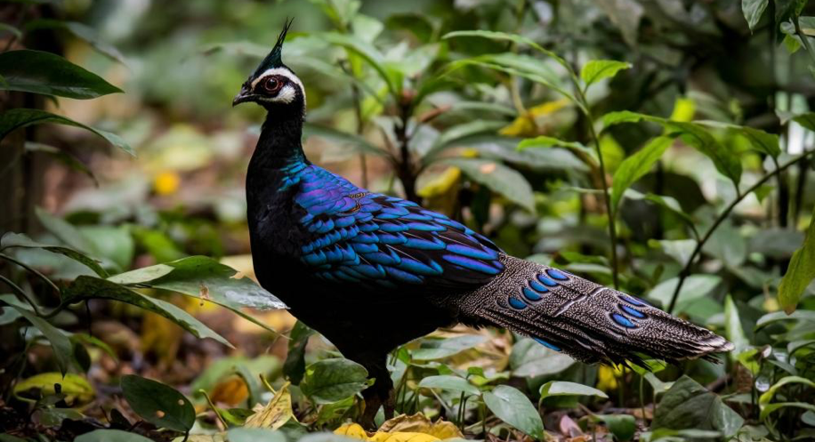

Leopard Cat

Palawan Peacock Pheasant
Losing Diverse Colors
From the Tubbataha Reefs to the El Nido Mangroves, Palawan's lush forests and pristine waters have been experiencing biodiversity loss, due largely in part to human activities. Biodiversity loss refers to the accelerated decline of biological diversity, whether it be loss in genetic diversity, the endangerment or extinction of a species, or even the collapse of a whole ecosystem. Because of this, Palawan's long list of endemic flora and fauna are in danger.
Leopard Cat
Palawan Peacock Pheasant
Calamian Deer
Palawan Pangolin
Learn more at PalawanEco's Blog
Highlighted Post

October 3, 2025
We naturally strive towards development and progress. Palawan is visibly no different. Buildings rise, trades grow busier, and tourists flood the province, especially during summers. But there are unseen effects that anyone rarely thinks about. At the same time, forests are felled, animals are hunted to extinction, and barely any space is left for Palawan's ecosystem to breathe...
Disclaimer: PalawanEco is a school project made for educational purposes only.